Kivy es un framework para construir aplicaciones con interfaz gráfica (GUI) multiplataforma. Provee widgets, layouts, eventos y más.
Si quieres crear interfaces gráficas en Python con un enfoque moderno y con soporte para gestos y multitouch en dispositivos móviles y táctiles, Kivy es una buena opción.
Conociendo Kivy
Kivy es un framework para crear aplicaciones con interfaces gráficas en Python. Está pensado para UI con soporte multitouch y puede ejecutarse en varios sistemas operativos.
Kivy funciona muy bien cuando:
- Quieres una GUI en Python con componentes y layouts listos para usar
- Te interesa reutilizar la misma base de código en escritorio y, más adelante, empaquetar para móviles
- Prefieres un enfoque declarativo para la interfaz y dejar la lógica de negocio en Python
Instalando Kivy
La forma recomendada de instalar Kivy es usar un entorno virtual y luego instalar el framework desde PyPI. Los comandos necesarios pueden variar un poco según tu sistema operativo.
En Windows
En Windows, puedes crear el entorno virtual e instalar Kivy ejecutando los comandos siguientes:
PS> python -m venv venv
PS> venv\Scripts\Activate.ps1
(venv) PS> python -m pip install "kivy[base]"
Con estos comandos, primero creas y activas un entorno virtual de Python y luego instalas Kivy desde PyPI. Opcionalmente, puedes instalar los ejemplos de Kivy con el paquete kivy_examples.
En Linux y macOS
En Linux y macOS el proceso es similar y puedes realizarlo con los siguientes comandos:
$ python -m venv venv
$ source venv/bin/activate
(venv) $ python -m pip install "kivy[base]"
Kivy también ofrece las variantes kivy[base,media] o kivy[full] para incluir más opciones y funcionalidades, como, por ejemplo, el manejo de audio y video. Si estás comenzando, kivy[base] suele ser suficiente.
Creando una aplicación Kivy
Una aplicación mínima en Kivy generalmente requiere que sigas los pasos siguientes:
- Crear una subclase de
App. - Implementar el método
.build()para devolver el widget raíz de la UI. - Crear una instancia de la clase y llamar su método
.run().
Para traducir estos pasos a código Python, guarda el código siguiente como hello.py:
from kivy.app import App
from kivy.uix.label import Label
class HelloApp(App):
def build(self):
return Label(text="Hola, Mundo!")
HelloApp().run()
En este ejemplo, importas App como la clase base de tu aplicación. También importas Label para mostrar texto en pantalla. Luego defines HelloApp heredando de App e implementas .build() para construir la interfaz. El widget que devuelves en este método será la raíz del árbol de widgets de Kivy. En este ejemplo, usas el Label con el texto Hola, Mundo!.
Por último, creas la instancia de HelloApp y llamas al método .run(). Con esto, Kivy inicia la aplicación y su bucle principal de eventos, abre la ventana y renderiza el Label que devolviste en .build().
Puedes ejecutar la aplicación con el comando siguiente:
$ python hello.py
Una vez que ejecutas este comando, verás en pantalla una ventana que luce como la siguiente:
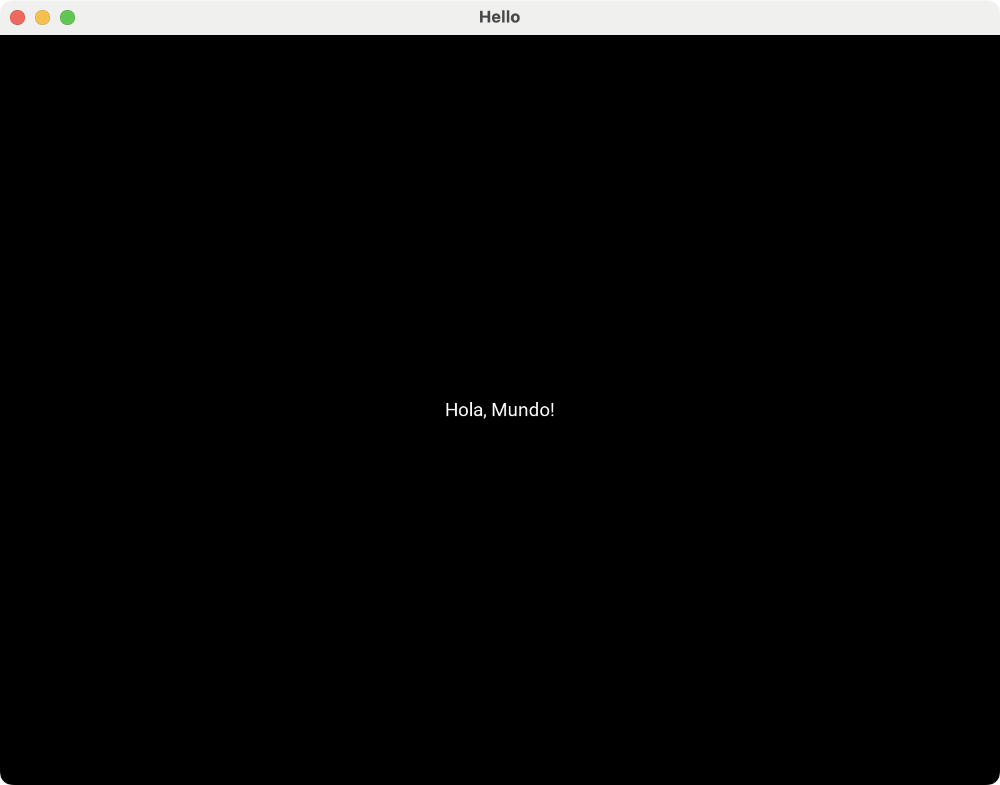
Explorando widgets comunes en Kivy
En Kivy, una interfaz (UI) es un árbol de widgets. Muchos widgets exponen eventos, como on_press en un Button. También tienen propiedades como .text, .active o .value, que puedes vincular con .bind() para reaccionar a eventos de usuario.
En las siguientes secciones, encontrarás una selección de widgets básicos que te ayudarán a comprender conceptos fundamentales para empezar a crear tus GUIs con Kivy.
Botones clicables
La clase Button ofrece un widget clicable en forma rectangular. Algunos botones típicos incluyen Ok, Cancelar, Aplicar, Sí, No, Cerrar, entre otros. He aquí un ejemplo que crea estos botones:
from kivy.app import App
from kivy.core.window import Window
from kivy.uix.boxlayout import BoxLayout
from kivy.uix.button import Button
class ButtonsApp(App):
def build(self):
self.title = "Botones Kivy"
Window.size = (200, 200)
layout = BoxLayout(orientation="vertical", padding=20, spacing=10)
for text in ["Ok", "Cancelar", "Aplicar", "Sí", "No", "Cerrar"]:
button = Button(text=text)
layout.add_widget(button)
return layout
ButtonsApp().run()
En este ejemplo, la clase ButtonsApp crea una ventana que muestra varios botones en una columna. En .build(), primero configuras la ventana con un título y un tamaño apropiado. Luego, creas un BoxLayout vertical con padding y spacing para garantizar margen interno y separación entre los botones.
El ciclo for recorre la lista de botones y los crea para luego añadirlos al layout con .add_widget(). Al final, .build() devuelve el layout como widget raíz.
Cuando corres la aplicación, obtienes una ventana como la siguiente:
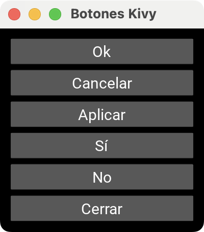
Estos botones todavía no ejecutan ninguna acción al hacer clic en ellos, pues aún no están vinculados o enlazados a una función o método. Aprenderás sobre esto en la sección "Conectando eventos con callbacks en Kivy".
Campos de entrada de texto
TextInput permite que el usuario escriba texto. Considera el siguiente ejemplo que crea un formulario para entrada de credenciales de usuario:
from kivy.app import App
from kivy.core.window import Window
from kivy.uix.boxlayout import BoxLayout
from kivy.uix.textinput import TextInput
class TextInputApp(App):
def build(self):
self.title = "Campos de texto Kivy"
Window.size = (250, 180)
layout = BoxLayout(orientation="vertical", padding=20, spacing=10)
for text in ["Nombre", "Usuario", "Contraseña"]:
entry = TextInput(
hint_text=text,
multiline=False,
)
layout.add_widget(entry)
return layout
TextInputApp().run()
Este ejemplo muestra cómo usar TextInput para crear campos de texto. En el ciclo for, creas tres instancias de TextInput y las agregas al BoxLayout, de modo que cada campo aparezca apilado en la ventana. La propiedad hint_text actúa como texto de ayuda (placeholder) y le indica al usuario qué debe escribir en cada campo.
Además, al establecer multiline=False, le dices a TextInput que actúe como un campo de una sola línea.
A continuación se muestra cómo luce tu aplicación:
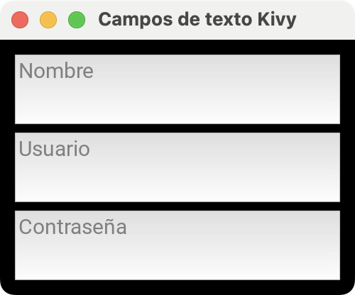
Prueba a introducir texto en cada campo. También podrás copiar y pegar texto con las combinaciones de teclas Ctrl+C y Ctrl+V, respectivamente.
Botones de opción
La clase CheckBox representa una opción booleana que te permite activar o desactivar características, funcionalidades, configuraciones y similares:
from kivy.app import App
from kivy.core.window import Window
from kivy.uix.boxlayout import BoxLayout
from kivy.uix.checkbox import CheckBox
from kivy.uix.label import Label
class CheckBoxApp(App):
def build(self):
self.title = "Botones de opción Kivy"
Window.size = (250, 150)
Window.clearcolor = (1, 1, 1, 1)
options = [
"Recibir notificaciones",
"Aceptar términos y condiciones",
"Suscribirse al boletín",
]
layout = BoxLayout(orientation="vertical", padding=10, spacing=10)
for option in options:
row = BoxLayout(orientation="horizontal", spacing=8)
row.add_widget(CheckBox(size_hint_x=None, width=30))
label = Label(
text=option,
color=(0, 0, 0, 1),
size_hint_x=None,
)
label.texture_update()
label.width = label.texture_size[0]
row.add_widget(label)
layout.add_widget(row)
return layout
CheckBoxApp().run()
En este ejemplo, creas una lista de opciones con casillas de verificación usando objetos CheckBox. Creas un BoxLayout vertical para la aplicación y, para cada opción, construyes una fila horizontal (row) en la que insertas un checkbox. Al fijar size_hint_x=None y un width concreto, aseguras que todas las casillas tengan el mismo ancho y queden alineadas de forma consistente, una por fila, justo a la izquierda del texto.
Luego añades un Label con el texto de la opción y lo ajustas al tamaño real del contenido para que el texto quede pegado al checkbox sin ocupar el resto de la fila.
Finalmente, agregas cada fila al layout principal, lo que produce una columna de filas, cada una con su checkbox y su descripción al lado.
Al ejecutar esta aplicación, obtendrás una ventana similar a la siguiente:
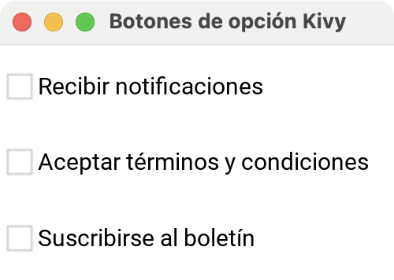
Cuando haces clic en las casillas, las activas o desactivas alternativamente. Puedes usar la propiedad .active para comprobar el estado actual de cada casilla y tomar acciones en consecuencia.
Selectores deslizantes
La clase Slider proporciona un selector deslizante que es útil para seleccionar un valor dentro de un rango predeterminado:
from kivy.app import App
from kivy.core.window import Window
from kivy.uix.boxlayout import BoxLayout
from kivy.uix.label import Label
from kivy.uix.slider import Slider
class SliderApp(App):
def build(self):
self.title = "Selector deslizante Kivy"
Window.size = (300, 150)
root = BoxLayout(orientation="vertical", padding=20, spacing=10)
label = Label(text="Valor: 0")
slider = Slider(min=0, max=100, value=0)
def on_value(instance, value):
label.text = f"Valor: {int(value)}"
slider.bind(value=on_value)
root.add_widget(label)
root.add_widget(slider)
return root
SliderApp().run()
En este ejemplo, organizas la UI en un BoxLayout vertical, con un Label arriba y un Slider abajo. Creas el Slider con min=0, max=100 y value=0, que son los parámetros típicos para definir el rango y el valor inicial de este widget.
Luego, conectas el Slider con el Label mediante la función on_value(), que recibe el nuevo valor del control y actualiza el texto del label según los cambios. Al hacer slider.bind(value=on_value), le dices a Kivy que ejecute esa función cada vez que cambie la propiedad .value del Slider.
Ejecuta la app y obtendrás una ventana como la siguiente:
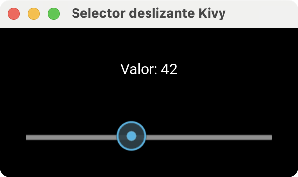
Prueba a mover el selector del slider y verás cómo el Label se actualiza, lo que logra una interfaz reactiva que refleja el valor seleccionado en tiempo real.
Listas desplegables
La clase Spinner ofrece un selector compacto que muestra el valor actual y, al presionarlo, despliega una lista de opciones:
from kivy.app import App
from kivy.core.window import Window
from kivy.uix.boxlayout import BoxLayout
from kivy.uix.spinner import Spinner
class SpinnerApp(App):
def build(self):
self.title = "Lista desplegable Kivy"
Window.size = (250, 350)
root = BoxLayout(orientation="vertical", padding=20, spacing=10)
options = ("Kivy", "PyQt6", "PySide6", "Tkinter")
base_text = "Framework GUI favorito"
spinner = Spinner(
text=base_text,
values=options,
size_hint_y=None,
height=100,
)
root.add_widget(spinner)
return root
SpinnerApp().run()
En este ejemplo, creas una lista desplegable usando Spinner. La lista muestra un texto inicial: Framework GUI favorito. Luego, añades una colección (tupla) de opciones entre las cuales el usuario podrá seleccionar una a la vez.
Si ejecutas esta aplicación, obtendrás una ventana como la siguiente:
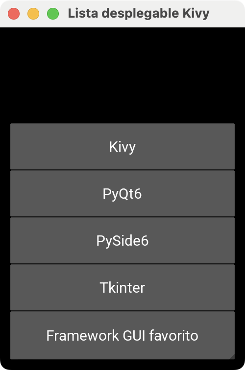
Aquí se muestra la lista desplegada. Puedes experimentar y seleccionar opciones de la lista. La opción seleccionada se mostrará en el selector compacto al cerrar la lista.
Usando gestores de disposición
Los layouts o gestores de disposición son contenedores que controlan la distribución de los widgets en la ventana de la aplicación. En Kivy, es habitual empezar con un layout mínimo y luego refinar la interfaz a medida que avanzas en el desarrollo de tu aplicación.
Disponer widgets en vertical u horizontal
La clase BoxLayout te permite organizar los widgets de forma secuencial, ya sea en orientación vertical (uno encima de otro) u horizontal (uno al lado del otro). El ejemplo siguiente demuestra la forma básica de usar este tipo de layout para disponer los widgets horizontalmente:
from kivy.app import App
from kivy.core.window import Window
from kivy.uix.boxlayout import BoxLayout
from kivy.uix.button import Button
class BoxLayoutApp(App):
def build(self):
self.title = "Disposición horizontal Kivy"
Window.size = (300, 100)
root = BoxLayout(orientation="horizontal", padding=20, spacing=10)
root.add_widget(Button(text="Izquierda"))
root.add_widget(Button(text="Centro"))
root.add_widget(Button(text="Derecha"))
return root
BoxLayoutApp().run()
La orientación horizontal es la orientación por defecto del BoxLayout, así que puedes obtener el mismo resultado si omites el argumento orientation al crear la instancia de BoxLayout.
En un BoxLayout, el padding controla el margen interno del layout, es decir, el espacio entre el borde del contenedor y sus widgets hijos. En cambio, el spacing controla el espacio entre los widgets hijos. En este ejemplo, sería el espacio (en píxeles) que dejas entre un botón y el siguiente, ya sea en una columna (vertical) o en una fila (horizontal).
Así es como luce esta aplicación:
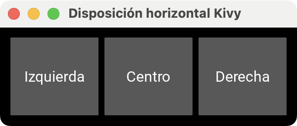
Para ordenar los widgets de manera vertical, solo tienes que hacer orientation="vertical":
from kivy.app import App
from kivy.core.window import Window
from kivy.uix.boxlayout import BoxLayout
from kivy.uix.button import Button
class BoxLayoutApp(App):
def build(self):
self.title = "Disposición vertical Kivy"
Window.size = (300, 300)
root = BoxLayout(orientation="vertical", padding=20, spacing=10)
root.add_widget(Button(text="Arriba"))
root.add_widget(Button(text="Centro"))
root.add_widget(Button(text="Abajo"))
return root
BoxLayoutApp().run()
Al ejecutar esta app, obtienes una ventana como la siguiente:
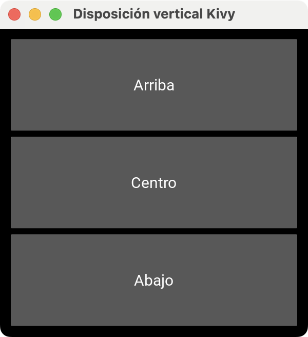
Como puedes apreciar, ahora los botones se muestran en una sola columna, manteniendo el orden en que los añadiste en el código.
Organizar widgets en cuadrículas
La clase GridLayout te permite distribuir los widgets en una cuadrícula de filas y columnas. Para usarlo, debes especificar al menos una dimensión, por ejemplo, cols o rows para columnas o filas respectivamente:
from kivy.app import App
from kivy.core.window import Window
from kivy.uix.button import Button
from kivy.uix.gridlayout import GridLayout
class GridLayoutApp(App):
def build(self):
self.title = "Disposición en cuadrícula Kivy"
Window.size = (300, 300)
root = GridLayout(cols=2, padding=20, spacing=10)
for index in range(6):
root.add_widget(Button(text=f"index={index}"))
return root
GridLayoutApp().run()
En este ejemplo, creas una app que organiza botones en una cuadrícula de dos columnas usando un GridLayout. Con cols=2 estableces cuántas columnas tendrá la cuadrícula.
Luego, en el ciclo for, creas seis botones y los vas añadiendo con .add_widget(). Kivy no coloca widgets en una fila o columna especificada, sino que asigna la posición automáticamente según el orden (index) en que agregas los widgets.
Si ejecutas la aplicación, obtendrás una ventana como la siguiente:
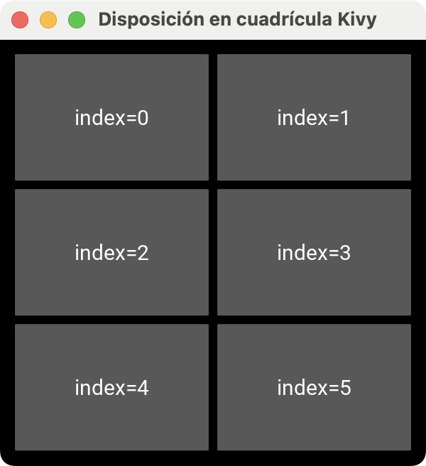
Cada botón muestra el índice con el que fue creado, y GridLayout lo coloca en la cuadrícula según el orden en que lo agregas con .add_widget().
Colocar widgets en posiciones específicas
FloatLayout te da más libertad para posicionar los widgets. Este layout respeta las propiedades pos_hint y size_hint de sus widgets hijos. Considera el siguiente ejemplo:
from kivy.app import App
from kivy.core.window import Window
from kivy.uix.button import Button
from kivy.uix.floatlayout import FloatLayout
class FloatLayoutApp(App):
def build(self):
self.title = "Disposición flotante Kivy"
Window.size = (600, 300)
root = FloatLayout()
button1 = Button(
text="Centrado",
size_hint=(0.5, 0.2),
pos_hint={"center_x": 0.5, "center_y": 0.5},
)
button2 = Button(
text="Esquina inferior derecha",
size_hint=(0.3, 0.1),
pos_hint={"right": 1, "y": 0},
)
root.add_widget(button1)
root.add_widget(button2)
return root
FloatLayoutApp().run()
Aquí, creas una app con un FloatLayout que te permite posicionar y dimensionar sus widgets hijos a partir de sus propiedades size_hint y pos_hint. El button1 ocupará el 50% del ancho y el 20% del alto del contenedor, lo cual logras con size_hint. Con pos_hint, lo anclas al centro del layout.
El button2 muestra otra forma común de ubicar elementos en FloatLayout. En este caso, usas pos_hint={"right": 1, "y": 0} para indicar que el borde derecho del botón debe coincidir con el borde derecho del contenedor (right=1) y que su posición vertical esté pegada al borde inferior (y=0). Además, size_hint lo hace ocupar el 30% de ancho y el 10% de alto del layout.
Tu aplicación debe lucir como la siguiente:
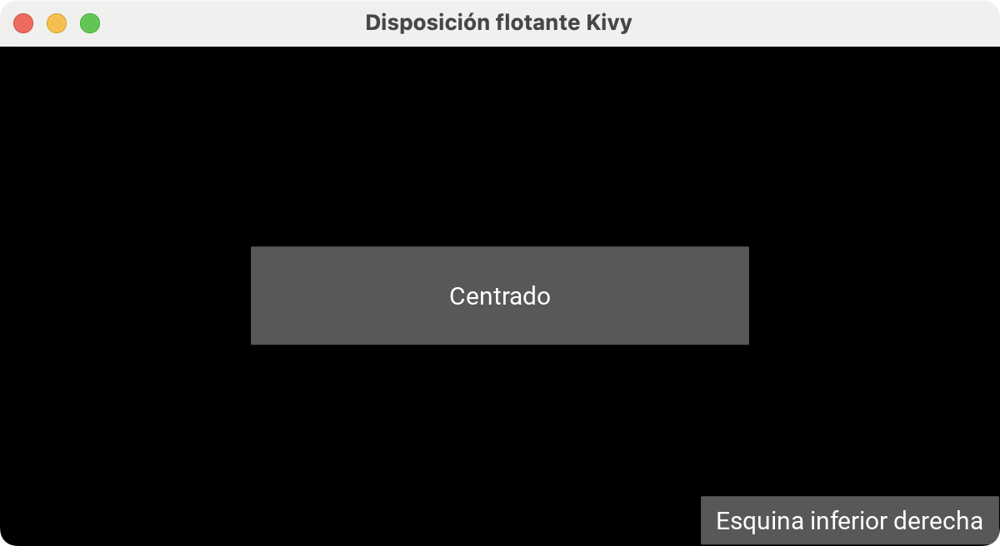
Como puedes ver, el layout renderiza los botones en las posiciones correspondientes sin necesidad de calcular las coordenadas manualmente. Al redimensionar la ventana, notarás que los botones se mantienen en sus posiciones.
Conectando eventos con callbacks en Kivy
En Kivy, la mayoría de los widgets te permiten vincular eventos y propiedades con funciones de callback mediante el método .bind(). Esta es la base para reaccionar a eventos del usuario, como clics, selecciones y entradas de texto.
Enlazar eventos
Cuando quieres ejecutar una acción al pulsar un botón, puedes enlazar el evento on_press (al presionar) u on_release (al soltar) a una función o método. En la función (callback), el parámetro instance te permite identificar qué botón disparó o generó el evento.
Considera el siguiente ejemplo:
from kivy.app import App
from kivy.core.window import Window
from kivy.uix.boxlayout import BoxLayout
from kivy.uix.button import Button
from kivy.uix.label import Label
class ButtonsCallbacksApp(App):
self.title = "Enlazar eventos Kivy"
Window.size = (220, 220)
root = BoxLayout(orientation="vertical", padding=20, spacing=10)
self.label = Label(
text="Presionaste: ...",
)
root.add_widget(self.label)
def build(self):
def on_press(instance): # Callback
self.label.text = f"Presionaste: {instance.text}"
for text in ["Ok", "Cancelar", "Aplicar"]:
button = Button(text=text)
button.bind(on_press=on_press) # Enlace
root.add_widget(button)
return root
ButtonsCallbacksApp().run()
En este ejemplo, creas una app que muestra un Label con el texto "Presionaste: ...". Este label mostrará el resultado de la interacción con los botones.
Luego, creas una función llamada on_press() que actualizará el texto del label según el botón que presiones. En el bucle, creas tres botones y los enlazas con on_press() mediante .bind().
Al ejecutar la app, obtendrás lo siguiente:

De este modo, cuando pulsas un botón en la ventana, Kivy llama al callback, pasándole la instancia del botón que disparó el evento, y el label se actualiza.
Enlazar propiedades
Además de eventos, puedes enlazar propiedades. Por ejemplo, en un TextInput puedes reaccionar a los cambios en la propiedad .text.
Considera el siguiente ejemplo:
from kivy.app import App
from kivy.core.window import Window
from kivy.uix.boxlayout import BoxLayout
from kivy.uix.label import Label
from kivy.uix.textinput import TextInput
class BindPropertiesApp(App):
def build(self):
self.title = "Enlazar propiedades Kivy"
Window.size = (320, 220)
root = BoxLayout(orientation="vertical", padding=20, spacing=10)
entry = TextInput(hint_text="Escribe algo aquí...", multiline=False)
display = Label(text="")
def on_text(instance, value):
display.text = f"Escribiste: '{value}'"
entry.bind(text=on_text)
root.add_widget(entry)
root.add_widget(display)
return root
BindPropertiesApp().run()
En este ejemplo, creas una app con un TextInput y un Label. El TextInput funciona como campo de entrada, mientras que el Label sirve como salida para mostrar lo que el usuario va escribiendo.
La clave está en la función on_text(). Como aquí enlazas una propiedad (.text), Kivy llama al callback con dos argumentos: la instancia del widget que cambió (instance) y el nuevo valor de la propiedad (value). En consecuencia, cada vez que el usuario modifica el contenido del TextInput, el callback actualiza el texto del Label con display.text = ....
Al ejecutar la app, obtendrás lo siguiente:
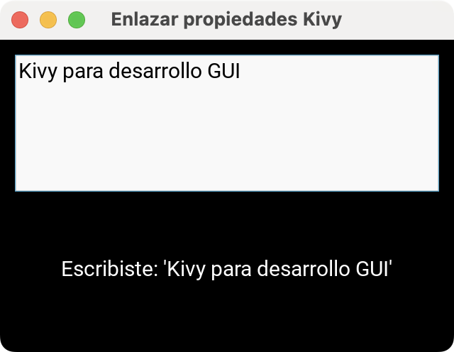
Como ves, .text es una propiedad que cambia mientras escribes. Enlazar propiedades con .bind() es una forma directa de construir interfaces reactivas, en las que la UI se actualiza automáticamente en respuesta a cambios de estado.
Separando la interfaz de la lógica con KV language
Una de las características más poderosas de Kivy es el KV language. Se trata de un lenguaje dedicado que te permite definir la interfaz de forma declarativa en un archivo .kv y dejar la lógica en Python.
Kivy puede cargar automáticamente un archivo .kv por convención de nombres, usando el nombre de la subclase de App. Por ejemplo, si tu clase de app se llama ContadorApp, Kivy buscará y cargará un archivo llamado contador.kv.
Supón que tu app tiene la estructura siguiente:
contador/
├── main.py
└── contador.kv
El archivo main.py define la aplicación y el widget raíz con la lógica de la aplicación:
from kivy.app import App
from kivy.core.window import Window
from kivy.properties import NumericProperty
from kivy.uix.boxlayout import BoxLayout
class ContadorApp(App):
def build(self):
self.title = "KV language Kivy"
Window.size = (300, 200)
return RootWidget()
class RootWidget(BoxLayout):
count = NumericProperty(0)
def increment(self):
self.count += 1
ContadorApp().run()
Este código no define elementos gráficos para la UI de tu aplicación. Puedes hacer este trabajo en contador.kv. Para este ejemplo, añadirás un label y un botón:
<RootWidget>:
orientation: "vertical"
padding: 20
spacing: 10
Label:
text: "Clics: " + str(root.count)
font_size: "24sp"
Button:
text: "Incrementar"
size_hint: (1, None)
height: 48
on_press: root.increment()
RootWidget:
Con este código en su lugar, la aplicación lucirá como se muestra a continuación:
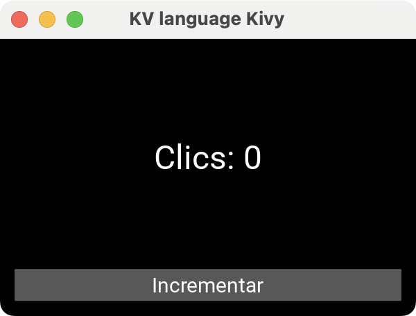
Fíjate en dos ventajas importantes de esa manera de construir tus aplicaciones Kivy:
- La UI queda definida en
contador.kv, lo que facilita iterar sobre el diseño. - La lógica de la app (incrementar el contador) se encuentra en tus archivos de Python, lo que desacopla el frontend del backend.
Conclusión
Con Kivy, puedes construir aplicaciones de interfaz gráfica con un conjunto sólido de widgets y layouts. También puedes separar la lógica y el diseño de la interfaz en archivos .kv a medida que tu aplicación crece.
A partir de aquí, prueba a combinar widgets y layouts para crear aplicaciones multiplataforma, crear tus interfaces con KV language para mantener tu proyecto organizado.